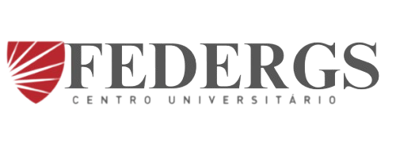

|  | Home | Quem Somos | Contato |
Sobre a universidadeSeja bem-vindo ao curso definitivo de League of Legends, desenvolvido e ministrado por profissionais experientes e apaixonados pelo cenário competitivo do jogo! Este curso foi projetado para jogadores que desejam elevar o nível do seu gameplay e alcançar patamares mais altos, seja no competitivo ou nas filas ranqueadas. Durante as aulas, você aprenderá conceitos fundamentais e avançados, incluindo:
Além disso, o curso inclui módulos sobre visão avançada, controle de recursos no mapa, mind games com adversários, e como se comunicar de maneira eficaz com o time, mesmo em partidas solo. Este é o ambiente perfeito para jogadores que buscam aprender com mentores que têm experiência prática no cenário profissional e conhecimento profundo das estratégias mais atualizadas. Não importa se você é iniciante ou já tem experiência, o curso se adapta ao seu nível e vai ajudá-lo a alcançar o próximo elo! Junte-se a nós e transforme sua experiência no League of Legends! |
|
Todos os direitos reservados | |